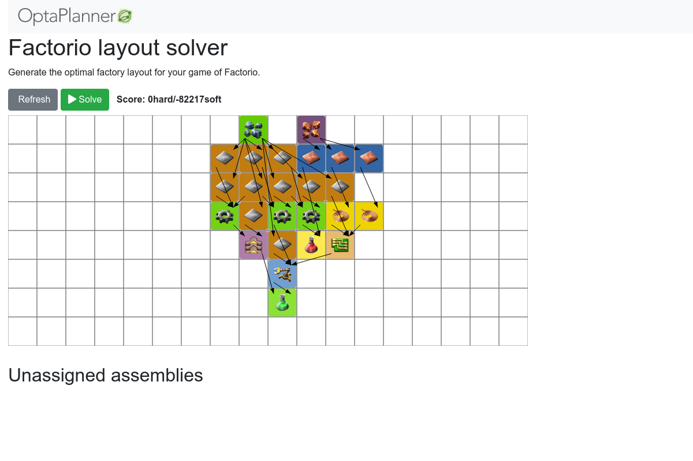

Which quickstart do you want to see?
School timetabling

Assign lessons to timeslots and rooms to produce a better schedule for teachers and students.
Facility location problem

Pick the best geographical locations for new stores, distribution centers, covid test centers or telco masts.
Factorio layout

Assign machines to assembly line locations to design the best factory layout.